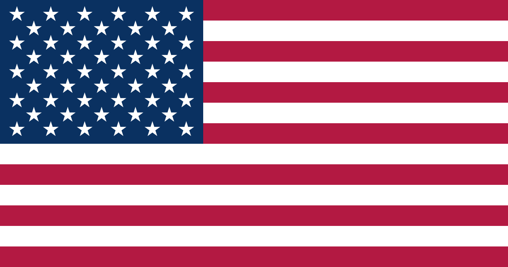

Selected client work
We help build yours.
Beyond our own apps, we've architected, led and delivered mobile products for broadcasters, banks, travel companies, retailers and startups — as lead, architect, and head of a mobile division.
Media & broadcast
Streaming, live sport, news and publishing apps at national scale.
TVPlayer
Restructured their iOS and tvOS apps, introduced new components and stabilised the product. Ten-month engagement working with stakeholders, designers and server teams.
ITV Hub+ — via Candyspace
Covered the ITV Hub+ app during a permanent-hire gap — maintenance and new features. Worked with ITV production, designers and server teams.
Sky Sports News — BSkyB
Building new functionality for the Sky Sports News iPad and iPhone apps — news handling, league tables and results across sports, video content and social integration.
The Sun, The Times, News of the World — News International
Enhanced the PDF reader, re-engineered JSON news feeds, added streaming video and in-app advertising, and designed resilient Core Data services.
"i" newspaper reader — The Independent
Built a PDF reader for their magazine app that matched existing functionality at higher resolution and greater speed, launching with the Independent's new paper. Also prepared push notifications for v2.
Fanatix Sports
Upgraded the existing Fanatix sports video and news app to support iOS 7, working alongside their in-house iOS team and designers.
Premier League football app
Built a new app for news feeds, video feeds and results for the Football Premier League, working with a designer, third-party services company and product owner.
Isle of Man TT
News and video feeds, results, campsite location and live race tracking for the Isle of Man TT, built with a designer, a back-end developer and product owner.
Mobcast — Tesco
Rebuilt an existing universal app to new designs with expanded functionality following Tesco's acquisition of Mobcast.
Travel
Booking platforms and integrated payments for major travel brands.
dnata Travel & Travel Republic
Technical lead, mobile divisionAn 18-month engagement (three extensions) leading a team building a suite of hotel and flight booking apps with integrated payment services. Worked with the CTO, product owners, designers, QA and server teams.
Hotels.com — Expedia
Technical lead, mobile divisionBrought in to lead development of a new iPad app and review the existing iPhone product. Focused on back-end architecture — multi-threaded downloads, Core Data, reachability — before building UI components. After 12 months, asked to organise and manage the entire mobile division, passing technical knowledge to the Mobile Web, Android, BlackBerry, Nokia and Windows teams.
Banking, fintech, gambling & ticketing
Banking, payments, crypto, gambling and ticketing — chip & pin, PCI-DSS, EU compliance.
Lloyds Banking Group
Completed an internal banking app, rewrote the code base for two project teams and finalised handover. Worked across two server teams, business analysts, technical project management and UX, presenting to stakeholders.
Santander fintech startup
Prepared the ground for a new team and kick-started a new product from nothing — including building the CI platform for an iOS app.
CoinMarketApp — iOS port
Replicated a highly successful Android crypto app on iOS — news feed, favourite coins, graphs and coin movements, later adding a currency converter and an Apple Watch extension. The owner went on to sell the product.
ProOptions — GameTech
Built ProOptions, an EU-compliant betting product for the gambling sector — a highly regulated, transaction-heavy domain where compliance and correctness are the product.
Masabi ticketing SDK
Kick-started an SDK project for the French rail network, building an iOS SDK around an existing Cordova/Java platform.
Enterprise, retail & platform
Secure messaging, IoT standards, SDKs and brand experiences.
BlackBerry / Secusmart
A 12-month contract leading a team redeveloping the Secusmart secure UI components and integrating voice services into their established texting app.
Zalando
Development on Zalon, Zalando's curated styling service — a new chat module, unit testing, and A/B-tested launch screens — and helped integrate the project and team with the wider business. Worked with a server team, business analyst, technical project manager and designers.
Everyman Cinema
Consumer apps for the cinema chain, built from the ground up — browsing show times, choosing a venue, booking and paying for tickets, pre-ordering food and drinks, and managing member benefits.
Vox Cinema — Middle East
Consumer apps for the cinema chain — browsing show times, choosing a venue, booking tickets, ordering food and managing member benefits. Inherited rather than built from scratch, then maintained and developed over two years.
oneTRANSPORT / OneM2M
An Innovate UK funded project delivering a unified transport data platform to OneM2M standards. Built the OneM2M SDK and then the oneTRANSPORT SDK with a server team, led architecture for white-label apps on top of both, and supported a hackathon showcasing demo apps.
Code Halo — Cognizant
An iPad app promoting the Cognizant Code Halo brand — heavy on animation, slick transitions and video feeds, including a "blow here" feature that inflates a globe using the microphone.
Tignum
Delivered v3 of a wellbeing app to deadline — completing outstanding sections, resolving technical issues, and mentoring junior developers. Worked with the server team and designers.
Startups & smaller teams
Prototypes, ports and first products.
Recrd
Co-founded an AI video platform. Built the original social video prototype, then built and managed the iOS, Android and Web teams, taking all products to market. Technical leadership, architecture and AI-accelerated delivery.
Aflete
Native iOS and Android apps for a platform that turns a social-media following into a business — influencer-led training programmes, content and own-brand products. HealthKit for workout and activity data, and in-app purchases handling subscriptions.
FiLMiD
A prototype "IMDB for advertisers" — built to demonstrate functionality against a GraphQL back end and review performance with millions of records and streaming video.
JustGoMusic
A new app letting users compose combined Facebook and Twitter posts and schedule them for a set date and time. Built with a product owner, back-end developer and QA.
Vendimus EPoS
A market-disruptive electronic point-of-sale app in six languages, integrated with the SagePay payment service.
Thinking Quiz
A quiz app pulling question batches from a server, plus ongoing mentoring for the startup — working with the management team, designer and back-end developer.
Fine & Country
Resolved critical memory and JSON faults in a property viewer app and redesigned it for better usability. Extended to deploy 25 individually badged apps for high-end franchised estate agents, each meeting App Store approval requirements.
Children's charity storybook app
A 12-week project for a leading children's charity — an app for under-fives combining photos with storyboards, built from design-team wireframes and assets.
As well as Mobile
Point-of-sale, stock control and retail systems — much of it security- and payments-critical.
- A.N.D. Systems — designed and built an EPoS and back-office stock- and order-management suite; founded the company and later sold it
- Retail Computer Solutions — delivered SQL EPoS software and project-managed 100+ lane EPoS, back-office and warehouse rollouts
- Point-of-sale software across IBM, Casio and Epson platforms, including touchscreen interfaces and peripheral integration
- SQL point-of-sale and back-office suite, with batch interfaces to a Unix ERP system
- Stock control software for SME retail and hospitality, with report generator, RF handheld terminals and label printers
- Booking and admissions system for the largest bird park in Britain, integrated with stock and accountancy servers
- Credit card EFTPoS interfaces for EPoS systems
- Consultant architect on bakery thin-client stock management and POS, advising a Russian development team
- In-store furniture ordering system for a large department store
- Automated supplier ordering interfaces to Booker, Nisa and Spar
- Weigh-scale integration for EPoS
- Video and game rental software for video libraries
- Membership control software for health and fitness clubs
- News round management software for distributors and retailers
- RS232 integration to Japanese EPoS terminals
- Contacts and funding-analysis data suite for a not-for-profit
What people who worked with us said
From LinkedIn recommendationsNot only did Dom lead the initiative to deliver the project on-time, he then went on to build the foundations for the team that is now in place.
Adam GillChief Technology Officer — the client on Travel Republic
Alex is a highly motivated professional who works well as part of a larger team and is creative in finding solutions to tough problems.
Alvaro SabidoFounder — was Alex's client
It was clear from day one that Dom's energy and organisational skills would make him a driving force at hotels.com. […] Dom was promoted to a Tech Lead role looking after mobile dev across h.com, and massively increased collaboration across our mobile teams.
Dave AllisonEngineering leadership, hotels.com
He supported us at TIGNUM as contractor in one of our most important yet complex projects. He showed a lot of professionalism, commitment and care. He supported the lead developers and the PMs to ensure project success.
Nizar KaisRan the engagement, TIGNUM
I worked with Dominic on the oneTRANSPORT project where he developed concept iOS applications and developed a oneM2M SDK. Dom is clearly a very competent iOS developer, and his previous experience was a great benefit to our project.
Owen GriffinDirector of Engineering — oneTRANSPORT
He is the one and only CTO I worked with that still passionate to write code and participate in the project as one of the developers. This makes him really close to every team member and empowers his understanding of the bits and bytes of the project.
Abu Malik Mohammad Abou-BashaSenior Software Engineer, reported to Dominic
Dominic is brilliant! He quickly digests the nature of issues and finds the right solutions to solve them. Hire him now!
Steve HicksWorked with Dominic
His commercial awareness and business acumen are spot on and I would wholeheartedly recommend anyone to work with him should they get the opportunity.
Christian JonesCo-Founder, FirstLook — on Dominic's commercial years
Want something built?
Tell us what you're working on — architecture reviews, a team to lead, or a product to build from nothing.
support@powerslave.devOr see what to put in the first email.